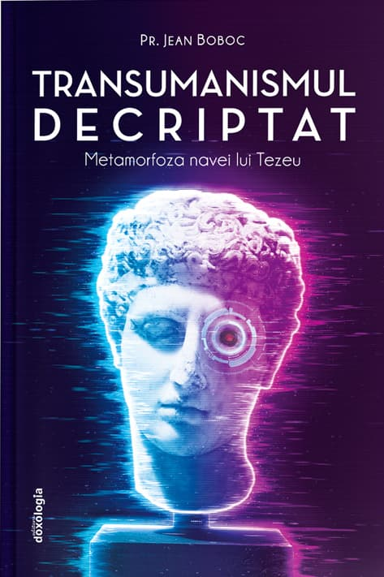

Este adevărat că atitudinile privitoare la moralitate se schimbă deseori, însă aceasta nu înseamnă că înseși principiile morale se schimbă, pentru că atunci nu mai are rost să vorbim despre evaluare morală. De fapt, se schimbă gradul în care aderăm la aceste principii, nu principiile însele. Așa stau lucrurile în general. (Vom reveni la acest subiect).
Iată principala întrebare care ar trebui să ne frământe în prezent și în deceniile următoare: care e granița permisă pentru pătrunderea tehnologiei în viețile noastre? Pentru că ea înaintează tot mai mult, an de an, lună de lună. Anul a devenit deja o unitate prea mare de măsurare a timpului atunci când vorbim despre evoluția tehnologiei. De pildă, citim aproape săptămânal știri prin care suntem informați că inteligența artificială câștigă tot mai mult spațiu în detrimentul inteligenței umane. Aflăm mereu despre noi succese ale AI, noi domenii în care inteligența noastră este depășită. Pentru iubitorii progresului cu orice preț, aceste vești reprezintă o invitație la „transformarea” omului, la „altoirea” AI pe trunchiul inteligenței naturale, dacă vrem ca aceasta din urmă să nu fie total dată la o parte, s-ar putea spune.
Încercând să răspundem la întrebare: este rezonabil să considerăm că prima dintre limitele pătrunderii tehnologiei în viețile noastre ar trebui să fie reprezentată în primul rând de afectarea identității umane, deci, în esență, a capacității de a ne păstra autonomia. Pentru că cel mai mare război se duce împotriva libertății, mai întâi cea interioară, profundă, apoi libertatea exterioară, social-politică. Tehnologia devine un musafir perfid care ocupă atâta spațiu în viețile noastre încât ne mai rămâne doar un colț neînsemnat. Aceasta înseamnă că rolul de stăpân al propriei vieți este detronat de ceva care este organizat în mare parte difuz, nevăzut – rețeaua de internet –, dar cu atât mai puternic în sensul presiunii asupra deciziilor, a modului de gândire, de organizare a timpului. „Țesătura” formată de raportul dintre activitățile umane și rețeaua de internet este atât de strânsă, încât puțini sunt cei care mai pot face delimitarea între propriile gânduri, credințe, atitudini și ceea ce li se sugerează că ar trebui să gândească.
Toți vedem cum ritmul devine pe zi ce trece mai accelerat când vorbim despre instrumentele utilizate sau care vor putea fi curând utilizate, ritmul tehnologiilor de comunicare, al celor utilizate în domeniul sănătății, în cel militar. Ne impresionează capacitatea tehnologiilor de urmărire a vieții personale, a „citirii” persoanelor, posibilitatea de a controla într-o măsură semnificativă stările (emoții, gânduri, disponibilități) maselor și ale indivizilor. Iar aceste tehnologii sunt încă în perfecționare. Pentru unii, astfel de schimbări construiesc „o minunată lume nouă”, iar pentru alții, acesta înseamnă coșmarul ce poate fi foarte aproape de realizare. De exemplu, se vorbește mult despre binefacerea sau oroarea utilizării cipurilor, despre magnetismul genetic, despre „atotprezența” inteligenței artificiale în această lume, până acolo încât amestecul dintre inteligența umană și cea artificială va face imposibilă separarea dintre ele.
Cuvântul de pe buzele multora dintre progresiști este „transumanism”, aflat în strânsă legătură cu ideea mai amplă a „resetării mondiale” (a se vedea Covid 19. The Great Reset, de Klaus Schwab, carte publicată în iulie 2020). Știm că sunt multe schimbări în prezent și că vor urma și altele mai importante. Întrebarea asupra căreia insistăm în acest articol este dacă mai putem vorbi despre repere morale, dacă, odată cu acest șoc tehnologic, se mai poate susține pretenția veche de milenii privind valoarea omului ca scop în sine, dincolo de mișcărea mai lentă sau mai rapidă a „resetărilor”. Cele câteva teme și interogații au fost suscitate de cărți și articole vizând perioada pe care o traversăm, a „nisipurilor mișcătoare” în domeniul biotehnologiilor, cu efecte în toate domeniile importante: etic, medical, social, economic, politic etc.
Cea mai incitantă, cuprinzătoare și argumentată lucrare este semnată de preotul Jean Boboc (1943-2019), francez de origine română, doctor în medicină la Universitatea din Paris și doctor în teologie la Institutul Saint Serge, specializat în mai multe ramuri medicale, în special în farmacologie clinică și toxicologie. Este vorba despre Transumanismul decriptat. Metamorfoza navei lui Tezeu, publicată în 2017 în Franța, iar în România, la Editura Doxologia, Iași, 2020, ediție îngrijită de prof. dr. Sebastian Moldovan, traducerea excelentă fiind realizată de Manuel Valeriu. Meritul cărții este acela de a fi cel mai bun ghid existent la ora actuală în încercarea de a înțelege ideologia transumanistă: rădăcinile sale intelectuale, temele majore, reprezentanții de bază, viziunile lor și modalitățile tehnice preconizate pentru a le atinge, contradicțiile interne, consecințele axiologice și etice ale revoluției antropologice pe care o propovăduiește transumanismul, documente internaționale prin care s-au făcut importanți pași înapoi pe terenul etic, cercuri politice și economice interesate de avansul cercetărilor în spiritul augmentării umane, noile tipuri de om: omul robotizat, omul protetic, omul bionic, cyborg-ul. Prin hibridarea omului cu mașina în diverse moduri, transumanismul dorește să revoluționeze orice temă care ține de firesc: procrearea, nașterea, îmbătrânirea, moartea, mergând până a le… desființa. Care mai este locul umanului după transumanism? Ce se mai poate face totuși acum, când suntem deja martori la implementarea unor idei transumaniste, martori la cercetări ce instrumentalizează, reifică omul? Care este modelul de la care nu trebuie să ne îndepărtăm? Ce înseamnă a fi un autentic om superior, dincolo de schimbările ideologice și culturale? În ce constă sacralitatea omului și care este trădarea bioeticii? Acestea sunt doar câteva dintre marile întrebări ce structurează cartea.
Ideologia transumanistă, cu rădăcini solide în iluminismul ateu francez, apoi hrănită pe solul pozitivist al secolului al XIX-lea, susținută de rezultatele spectaculoase ale științei secolului XX și mult încurajată de noile tehnologii biomedicale și cibernetice (și de tot felul de filosofări de-constructiviste, nihiliste), se dorește a fi un apostol (deși pe multe voci, deseori disonante) al noului umanism, unul „superior”. Însă acesta este tocmai pasul către o lume post-umană, nu doar post-umanistă. Adevărata superioritate, scrie pr. Jean Boboc spre finalul cărții, constă în sacralitatea omului, creat după chipul lui Dumnezeu și făcut pentru îndumnezeire – iată o „augmentare” în care persoana își atinge deplin potențialitățile. În schimb, transumanismul cade în contradicție, din moment ce propune o augmentare a omului, la finalul (sau chiar pe parcursul) căreia omul este… anulat. Aici duce orgoliul prometeic: „Desigur, noi trăim o epocă demiurgică, ce are drept consecință o pretinsă etică demiurgică, iar această etică are propria sa logică transgresională. Dispariția bioeticii autentice – care avea ca obiectiv de a păstra caracterul sacru al vieții și al demnității umane – prin trădarea slujitorilor ei nu lasă spațiu moral decât unei etici demiurgice cu geometrie variabilă, adaptabilă noilor propuneri ale științei” (pag. 424).
Schimbările tehnologice au adus deseori cu ele și schimbarea unor opinii și atitudini față de sine și de relațiile cu ceilalți; de pildă, opiniile despre corp, relații sexuale, procreare, despre embrionul uman și despre fetus, eutanasie, iar mai nou se discută intens despre manipularea genelor (temă strâns legată de eugenism), ameliorarea și augmentarea capacităților umane cu ajutorul inteligenței artificiale, ectogeneză, clonare, aspecte care depășesc obiectivele terapeutice justificate. Totuși, schimbarea unor atitudini morale nu poate fi echivalată cu „transformarea” principiilor morale. Altfel, nu ar avea sens să vorbim despre evaluarea morală a faptelor de-a lungul veacurilor, pentru că nu ar exista reperele pentru acea evaluare; un reper care este în continuă mișcare nu poate fi reper, tot așa cum un far luat de valuri nu mai poate ghida ambarcațiunile, chiar dacă ar continua să lumineze. De fapt, nu reperele morale se schimbă, ci adeziunea oamenilor, a comunităților, a societăților, la aceste principii. Iar bioetica se face tot mai vinovată de surzenie, muțenie și, ca atare, poartă o mare responsabilitate pentru terenul cedat. Însă, granița etică slăbită nu înseamnă și că există o întemeiere a relativismului moral (adică faptul că standardele morale diferă în mod esențial în funcție de epoci, comunități, societăți), ci există doar vinovăția celor care nu mai văd reperele. De asemenea, dacă ceva se poate realiza, nu înseamnă și că este permis și cu atât mai puțin că trebuie făcut. Am insistat asupra acestor aspecte, pentru că relativismul moral este principala ispită a vremurilor bogate în schimbări; totodată, el reprezintă una dintre scuzele celor înclinați spre derive morale.
Un aspect controversat este cel referitor la întâlnirea dintre inteligența artificială și cea umană chiar în casa minții noastre, prin crearea și promovarea microcipurilor. Desigur, ca orice măr otrăvit, și aici este prezentată partea frumoasă, „beneficiile” unei asemenea tehnologii. De exemplu, posibilitatea de a depista boli, de a dobândi informații relevante privind diverși indicatori ai stării de sănătate: presiunea arterială, nivelul de zahăr din sânge, reacția corpului la infecții, nivelul de inflamație, agenți patogeni etc. Pe un site al armatei americane, acum mai bine de un an, se făcea reclamă la o astfel de tehnologie deja existentă și în proces de perfecționare (oare cât de „perfectă” se dorește a fi?). Problema etică începe să apară în momentul în care înțelegem că aceste microcipuri sunt sau pot fi receptori și emițători, putând face parte dintr-o vastă rețea de informații, rețea imposibil de securizat în sens absolut și care poate ajunge în mâinile unui administrator răuvoitor. Însă, chiar presupunând că ea va fi perfect securizată, de unde atâta încredere în bunele intenții ale creatorilor acestor tipuri de tehnologie? Istoria politică ne învață prin mii de lecții că una dintre virtuțile omului liber este prudența și faptul că nu trebuie să dea vot de încredere absolută semenilor care promit binele odată ce vor ajunge la conducerea societății. Din păcate, gândirea critică primește lovitură după lovitură, curentele de opinie au mare forță în a nivela fluxul ideilor, stabilind ce trebuie spus și ce nu, marginalizând opozanții care sunt ironizați condescendent, sau apelându-se la tot felul de glume din care reiese cât de aerieni sunt cei care se tem de „cipare”.
Aceste idei despre transformarea umană (enhancement) nu mai sunt de mult timp scenarii SF, deși criticii ar putea să le eticheteze așa, pentru a discredita orice atitudine de prudență față de tehnologii ce pot pune realmente în pericol însuși modul de a fi uman, acea „demnitate umană” despre care vorbea Immanuel Kant, demnitate având la bază autonomia voinței ghidată de rațiune. Desigur, despre demnitatea umană creștinismul are o viziune mult mai înaltă, dar în prezentul articol nu este spațiu pentru a dezbate acest vast subiect.
În acest context merită amintită distincția fundamentală pe care o face sociologul Bryan Wilson (Religia din perspectivă sociologică, Editura Trei, București, 2000), aceea dintre raționalitatea formală sau instrumentală și raționalitatea valorică (reflexivă, teleologică). Raționalitatea instrumentală se referă la aflarea celor mai bune mijloace pentru atingerea unor scopuri prestabilite, pe când raționalitatea valorică are în vedere însăși alegerea scopurilor respective. În prezent, raționalitatea instrumentală este utilizată excesiv în detrimentul celei reflexive; alții („societatea”, „corporația”, „lumea”, „conducătorii”) ne aleg scopurile pentru care trebuie să luptăm. Unul dintre efectele faptului că acceptăm continuu noi tehnici științifice în majoritatea domeniilor vieții sociale este că oamenii ajung să caute tot mai des soluții tehnice la problemele lor, în loc să se bazeze pe menținerea unor tipuri de atitudine morală ce ar reduce semnificativ numărul de cazuri problematice.
Revenind la tema ameliorării și augmentării umane, mai precis la subiectul microcipurilor, metoda predilectă a transumaniștilor pentru a rezolva tot felul de probleme: acesta nu este un pas aflat firesc în continuarea transplantului de organe, de exemplu, ci reprezintă un salt uriaș faptul ca în centrul de comandă al minții tale să fie pusă o stație de emisie-recepție la care pot fi conectați diverși terți. Vi se pare ceva neînsemnat? Dacă este așa, faptul se poate explica doar pentru că tot mai mulți încep să se familiarizeze cu ideea (pusă deja în practică pe alocuri). Altfel, vorbim despre un pas colosal către transumanism, însă acest „dincolo de umanism” poate fi cea mai proastă idee pentru umanitate, pentru că ea nu reprezintă doar o călătorie spre Indii, spre polul sudic sau nordic al Pământului, ci acceptarea unei provocări în care riscul este incomparabil. Ce mai rămâne uman în transumanism? Doar „asamblarea” exterioară, aparentă, a corpului nostru?
Ce se întâmplă când presupusele „beneficii” devin principala valoare într-o societate? Când calculul utilitarist domină dezbaterea etică? Se vor aduce constant tot mai multe „argumente” în vederea eficacității, iar multe aspecte fundamentale pentru ceea ce ne constituie ca oameni vor fi înlăturate mai întâi din educație (axată dintotdeauna pe valorile ce reies din experiențele umane; aici vorbim despre rolul miturilor, al literaturii, al filosofiei, istoriei, al limbilor clasice și al celor moderne, al artelor), apoi din piața muncii, pentru că, se consideră, multe profesii vor fi realizate mai bine de roboți; chiar și acelea de judecător, medic, profesor. Însă cum ar arăta o generație de copii în care profesorii sunt roboți cu chip uman? Sincer, nu vreau să aflu răspunsul. Anumite experimente nu ar trebui făcute vreodată, pentru că efectele ar fi ireversibile pentru subiecții implicați în ele. Ar fi un genocid moral, așa cum a fost experimentarea regimurilor totalitare în secolul XX. Iar dacă cineva ar spune că am avea totuși ceva de învățat din aceste experimente, ce fel de îndreptățire ar putea fi adusă pentru a le iniția? Cine poate stabili care este costul moral rezonabil al lor? Nimeni nu poate dobândi consimțământul informat al participanților la experimente globale precum cele vizate de transumanism.
Transumanismul înseamnă cu siguranță schimbare, însă în detrimentul omului; este o schimbare în care domină acest „trans”, pe când umanismul rămâne în umbră, până la a deveni o amintire. Nu poate fi vorba despre un pariu câștigător atunci când riscul înseamnă însăși lezarea ireversibilă a omului. Cu toate acestea, unii urmăresc atingerea utopiei transumaniste cu multă îndârjire. O fac din imprudență sau pentru că întrevăd un câștig deosebit prin realizarea acelor obiective? De remarcat faptul că hotărârea de a te arunca pe tine și pe ceilalți într-o prăpastie al cărei capăt nu se vede (dacă s-ar vedea, rezultatul ar fi același, odată ce ai sărit) este demnă de intenții iraționale, anarhiste. Este pariul autodistructiv prin excelență.

Comentarii